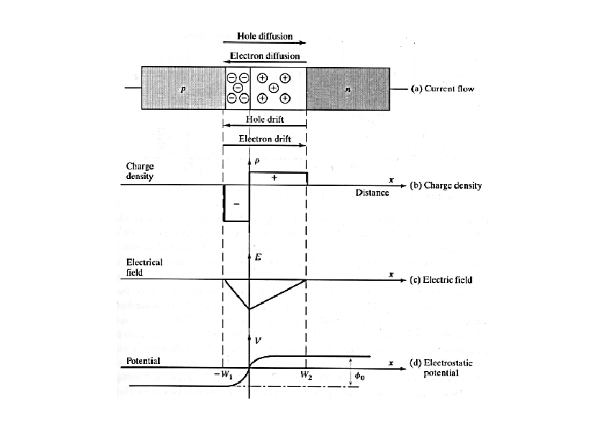
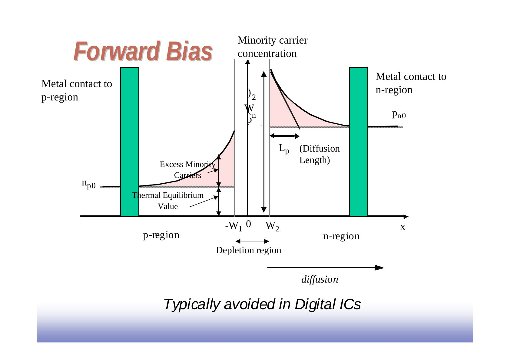
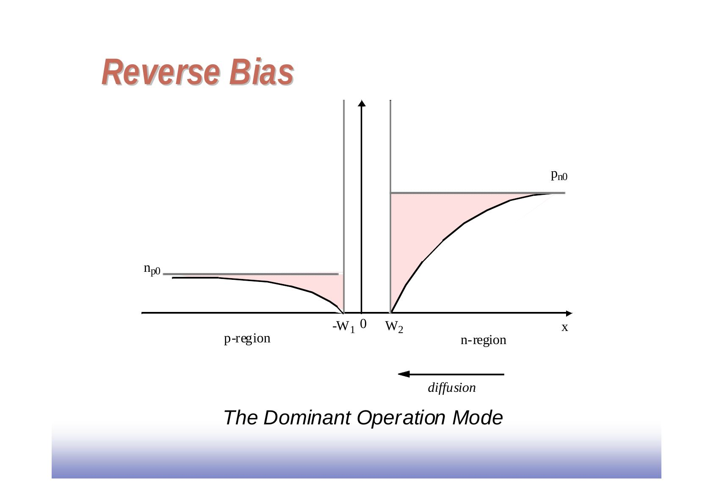
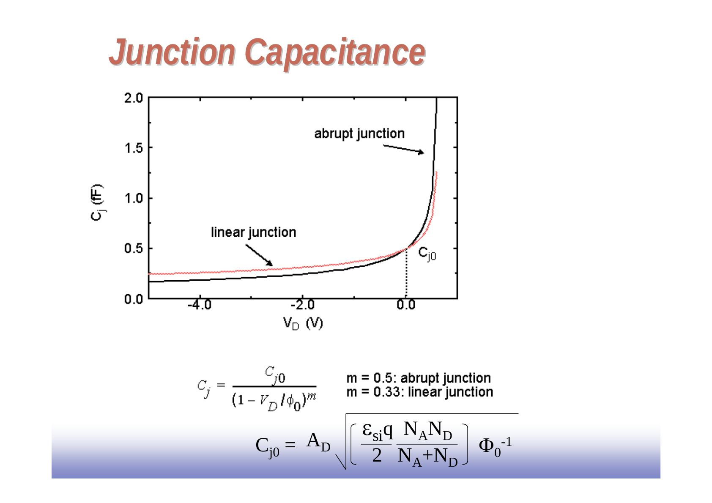
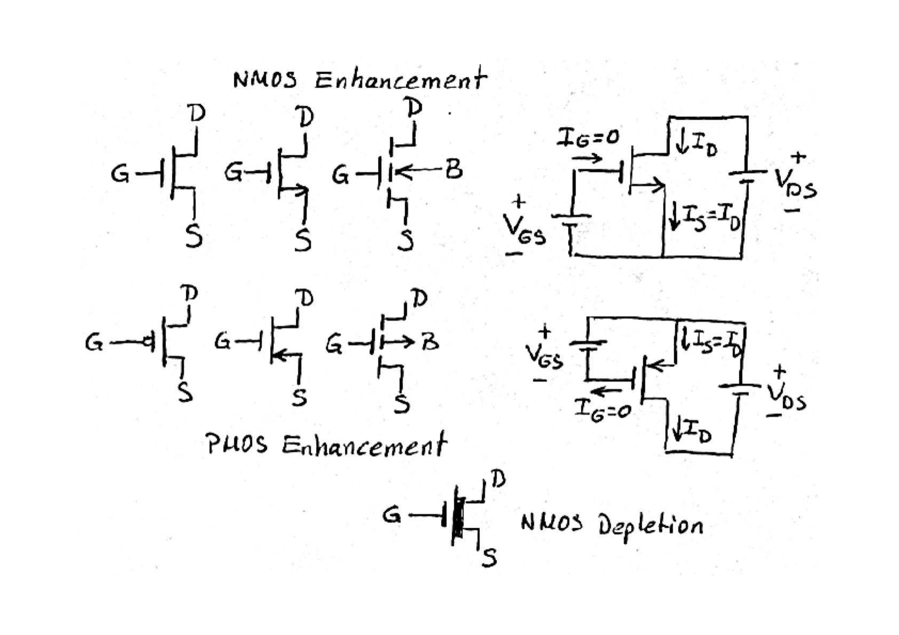
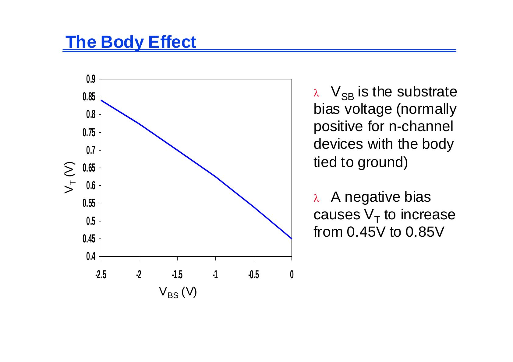
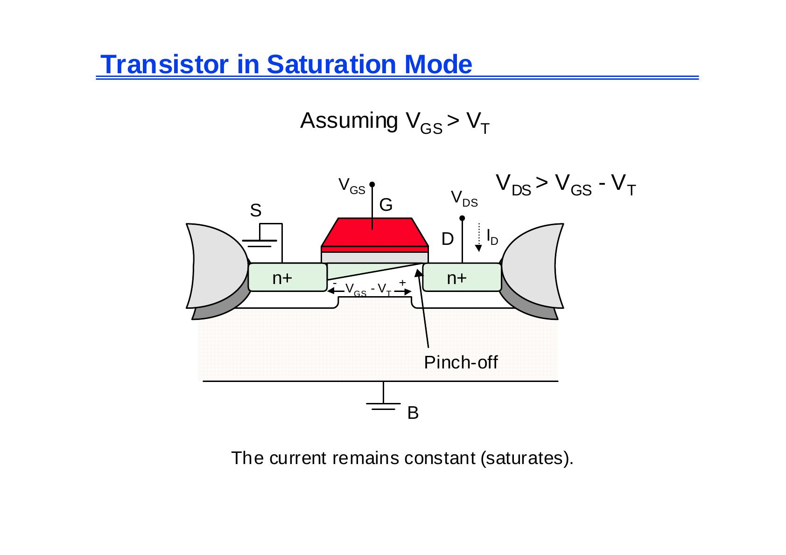

· EEM312
EEM312 Digital Electronics: Introduction to the Diode and the MOS Transistor (UC Berkeley EE141 slides, Jan Rabaey)
EEM312 – Sayısal Elektronik · 06.03.2006 · 16.10.2026
This post presents the 37-page presentation titled "The Diode," which Prof. Dr. Emin Akata distributed in the EEM312 Digital Electronics course at Başkent University in the spring semester of 2006. The presentation is largely based on the UC Berkeley EE141 (Digital Integrated Circuits) lecture slides by Jan M. Rabaey; the instructor's handwriting and derivations, along with a few figures taken from other textbooks, were added. The slides are in English; the content is transcribed below with explanations in English and the formulas. The original PDF can be downloaded at the end of the post. The series continues with: MOS Transistor.
This content belongs to a third-party source; it is shared for archival and nostalgic purposes with the source credited. It will be removed upon request by the rights holder.
Diode
In an IC process, a p-n junction is formed by a p region inside an n substrate with aluminum contacts on top (A: anode, B: cathode). In digital integrated circuits, the diode is mostly present as a parasitic element (e.g., the source/drain–substrate junctions of MOS transistors).

Forward and reverse bias
- Forward bias: minority carriers are injected into both sides of the junction; the excess minority carriers decay over the diffusion length (L_p) back to their equilibrium values (n_p0, p_n0). In digital ICs this mode of operation is generally avoided.
- Reverse bias: the minority carrier concentrations at the junction edge fall below their equilibrium values; in digital ICs this is the dominant mode of operation.


Diode current
- I_D = I_S (e^(V_D/Φ_T) − 1)
- Built-in potential: Φ₀ = Φ_T ln(N_A N_D / n_i²)
- Thermal voltage: Φ_T = kT/q = 26 mV (300 K)
- N_A is the acceptor concentration, N_D the donor concentration; n_i ≅ 1.5 × 10¹⁰ cm⁻³ (silicon, 300 K); k = 1.38 × 10⁻²³ J/K; T = 273 + °C; q = 1.6 × 10⁻¹⁹ C
Notes:
- I_S is the saturation current and is proportional to the cross-sectional area of the diode.
- I_S depends strongly on temperature; it roughly doubles for every 5 °C increase.
- In real devices the reverse current is about 3 times larger than I_S; this is due to electron-hole pairs thermally generated in the depletion region and swept out by the electric field. The reverse current doubles every 10 °C.
- In typical silicon junctions, I_S is on the order of 10⁻¹⁷ A/µm².
- Φ₀ is also called the cut-in voltage (0.6–0.8 V).
On a linear scale, the diode current rises rapidly beyond V_D ≈ 0.7 V; on a logarithmic scale, the forward current increases with a slope of 2.3Φ_T V/decade.
Hand-analysis models: (a) ideal diode model I_D = I_S(e^(V_D/Φ_T) − 1); (b) first-order model: the diode, when conducting, is a voltage source of value V_Don. In an example taken from a textbook in the presentation, for a simple diode circuit with V_S = 3 V, R_S = 10 kΩ and I_S = 0.5 × 10⁻¹⁶ A, the numerical solution of the equation V_S − R_S I_D = V_D gives I_D = 0.224 mA, V_D = 0.757 V; the simple model with V_Don = 0.7 V gives V_D = 0.7 V, I_D = 0.23 mA. For this reason, it makes sense to use the simple model in the first-approximation solution.
Depletion region
Charge: The space charges on the two sides of the depletion region are equal:
- −qW₁N_A A_D = qW₂N_D A_D ⇒ W₁ = −W₂ N_D/N_A … (1)
- Region width W_j = W₂ − W₁ ⇒ W₂ = W_j + W₁ … (2)
- From (1) and (2), W₂ = W_j / (1 + N_D/N_A) … (3) (W₁ is negative)
- Q_j = Q_N = qW₂N_D A_D … (4) ⇒ Q_j = q [N_A N_D/(N_A + N_D)] A_D W_j … (5)
- From device physics, W_j = √[(2ε_si/q)((N_A + N_D)/(N_A N_D))(Φ₀ − V_D)] … (6)
- Substituting (6) into (5): Q_j = A_D √[2ε_si q (N_A N_D/(N_A + N_D)) (Φ₀ − V_D)]
Under reverse bias, V_D is negative.
Maximum electric field: From Gauss's law, E = q/(ε₀A); hence
- E_j = √[(2q/ε_si)(N_A N_D/(N_A + N_D))(Φ₀ − V_D)]
Junction capacitance
Since there are very few free carriers in the space-charge region, the region behaves like an insulator with dielectric constant ε_si, and the n and p regions behave like capacitor plates. Taking the derivative C_j = dQ_j/dV_D and rearranging:
- C_j = A_D √[(ε_si q/2)(N_A N_D/(N_A + N_D))(Φ₀ − V_D)⁻¹]
- At zero bias (V_D = 0): C_j0 = A_D √[(ε_si q/2)(N_A N_D/(N_A + N_D)) Φ₀⁻¹]
- C_j = C_j0 / √(1 − V_D/Φ₀), in general C_j = C_j0/(1 − V_D/Φ₀)^m; m = 0.5 for an abrupt junction, m = 0.33 for a linearly graded junction

Diffusion capacitance
The dynamic behavior of the diode is modeled by the nonlinear capacitance C_D, which combines the charge-storage effects of the space charge and the excess minority carriers:
- Stored excess minority carrier charge Q = τ_T I_D = τ_T I_S(e^(V_D/nΦ_T) − 1) ≅ τ_T I_S e^(V_D/nΦ_T) (for I_D ≫ I_S); n is the emission coefficient, which is 1 for most diodes, and τ_T is the mean transit time.
- C_d = dQ/dV_D; C_D = C_j + C_d = C_j0/(1 − V_D/Φ₀)^m + (τ_T I_S/Φ_T) e^(V_D/nΦ_T)
- C_d is significant only under forward bias; this is not the case in digital integrated circuits.
Large-signal equivalent capacitance
The junction capacitance depends on voltage; since the voltage in digital circuits changes rapidly over the V_high–V_low range, it is more convenient to use an equivalent linear C_eq instead of the nonlinear C_j:
- C_eq = ΔQ_j/ΔV_D = [Q_j(high) − Q_j(low)] / (V_high − V_low) = K_eq C_j0
- K_eq = [−Φ₀^m / ((V_high − V_low)(1 − m))] [(Φ₀ − V_high)^(1−m) − (Φ₀ − V_low)^(1−m)]
Diode model: series resistance R_S, current source I_D, and parallel C_D. Secondary effects: avalanche breakdown at about −20 V.
Introduction to the MOS transistor
A transistor is a switch: when V_GS ≥ V_T, it behaves like a switch with resistance R_on between the source and the drain. The MOS transistor consists of a polysilicon gate, a thin gate oxide, n+ source/drain regions, field oxide, and a p-type substrate.

Threshold voltage
The value of V_GS at which strong inversion occurs is called the threshold voltage V_T.
- Depletion region width W_d = √(2ε_si φ/(qN_A)), its charge Q_d = √(2qN_A ε_si φ); φ is the potential at the oxide-silicon interface and N_A is the substrate doping.
- When the inversion layer is present, the depletion region charge is constant: Q_B0 = √(2qN_A ε_si |2φ_F|).
- If a substrate bias V_SB is applied, the surface potential required for strong inversion increases: Q_B = √(2qN_A ε_si (|−2φ_F| + V_SB)).
V_T = V_T0 + γ(√|−2φ_F + V_SB| − √|−2φ_F|)
- V_T0: threshold voltage at V_SB = 0; it mostly depends on the fabrication process (work-function difference between gate and substrate, oxide thickness, Fermi voltage, charges trapped at the surface, ion implantation dose, etc.).
- V_SB: source-bulk voltage.
- φ_F = −φ_T ln(N_A/n_i): Fermi potential (~ −0.3 V).
- γ = √(2qε_si N_A)/C_ox: body-effect coefficient; ε_si = 1.053 × 10⁻¹⁰ F/m, C_ox = ε_ox/t_ox, ε_ox = 3.5 × 10⁻¹¹ F/m.

V_SB is normally positive in n-channel devices whose body is tied to ground; a negative V_BS raises V_T from 0.45 V to 0.85 V.
Linear and saturation regions
- Linear region (V_GS > V_T, V_DS < V_GS − V_T): the current is a linear function of both V_GS and V_DS (for small V_DS).
- Saturation region (V_DS > V_GS − V_T): the channel is pinched off at the drain end and the current remains constant (saturates).

Derivation of the linear-region current
- The charge in a dx-long segment of the channel: dq(x) = −C_ox W dx [V_GS − v(x) − V_T]; the charge per unit area is Q_i(x) = −C_ox[V_GS − v(x) − V_T], C_ox = ε_ox/t_ox.
- The field at point x, E(x) = −dv(x)/dx, drives the electrons toward the drain with velocity µ_n dv(x)/dx; i = (dx/dt)(dq/dx) = µ_n (dv(x)/dx)(dq(x)/dx).
- Substituting, I_D = −i = µ_n C_ox W [V_GS − v(x) − V_T] dv(x)/dx; both sides are integrated from 0 to L and from 0 to V_DS, respectively.
- I_D = (µ_n C_ox)(W/L)[(V_GS − V_T)V_DS − V_DS²/2]
Here µ_n C_ox = k′_n is the process transconductance parameter, k_n = k′_n W/L is the gain factor, and W/L is the aspect ratio.
Note: Some pages of the presentation (e.g., the diode circuit example, the three-dimensional structure and cross-section of the MOSFET, the i_D–v_DS curves) are figures scanned from printed textbooks; these were not included as images in the post, and only their content was summarized.